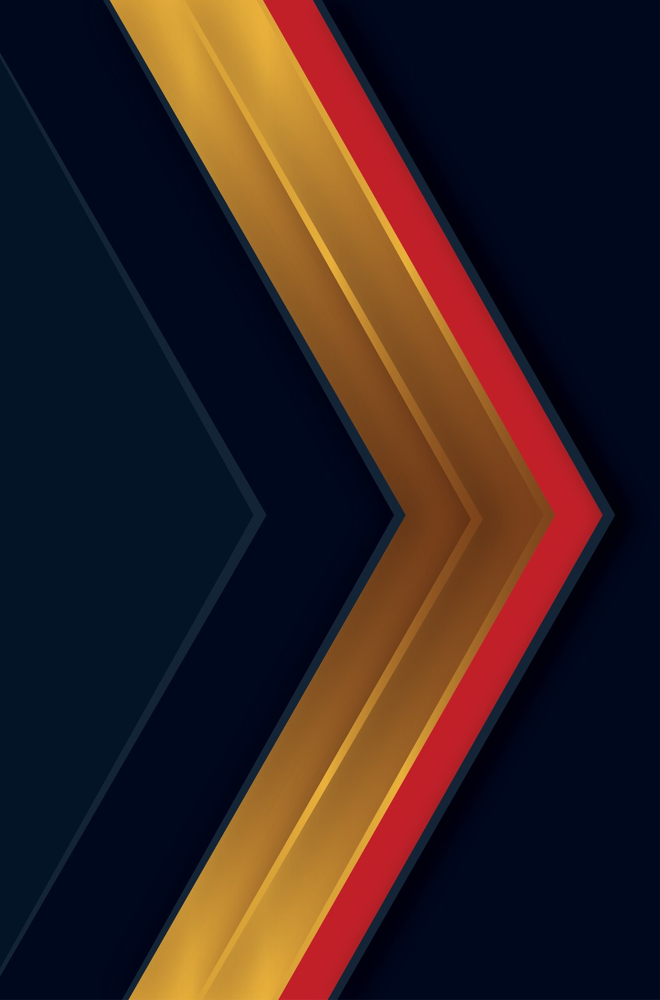
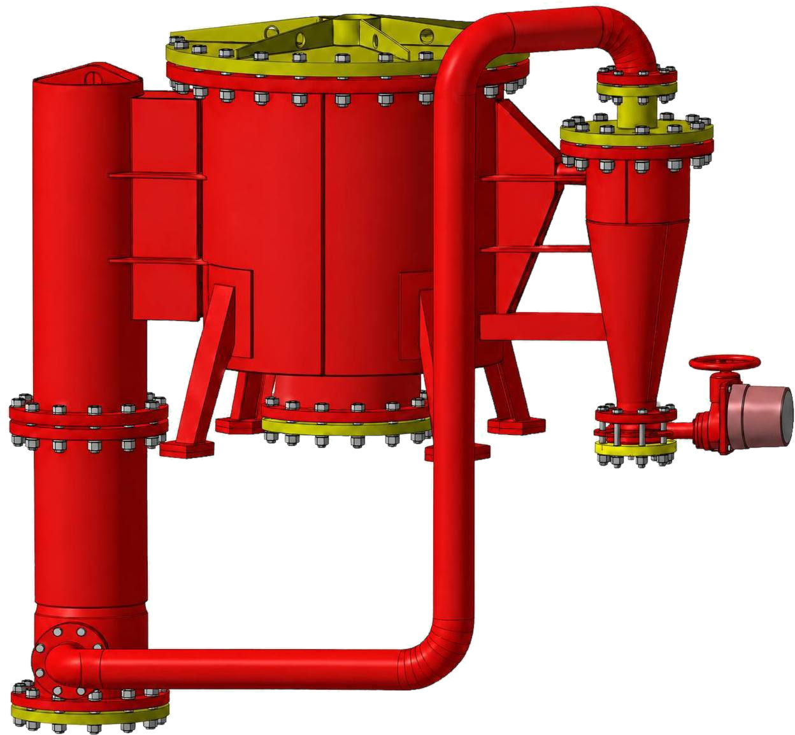
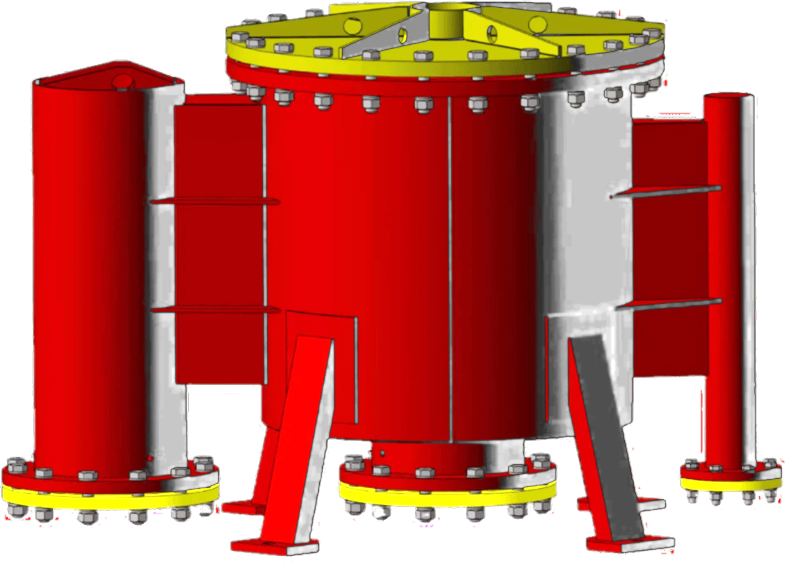
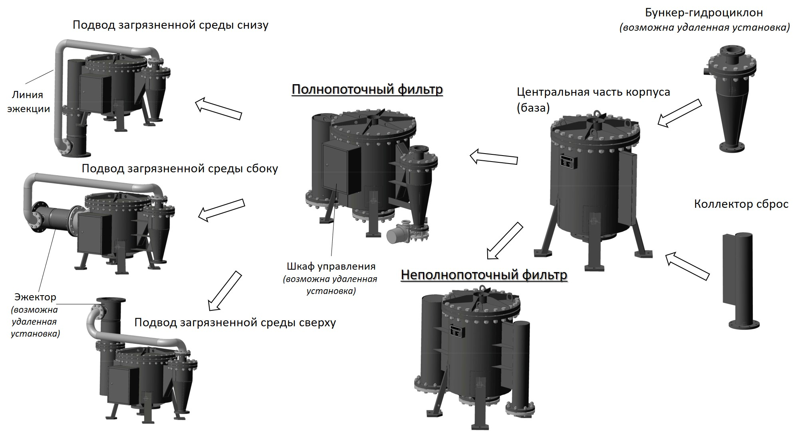

Единственный в России производитель гидродинамических фильтров ТМ ФОГОД. Вода, масло, СОЖ — серийные решения и изготовление по вашему ТЗ.


Оба типа собираются на одной базе — центральной части корпуса. Дальше комплектация расходится, и от неё зависит, теряете вы жидкость на очистке или нет.

Фотореалистичная движущаяся вода в вебе — это видео, другого способа нет. Нарисованная скриптом вода — ровно то, что в проекте уже отклонено как «сгенерированная вода». Нужен файл: rabota-filtra-ovgd.mp4 или любая ваша съёмка потока. Слот под него готов.
Сейчас аппарат выезжает вправо с лёгким доворотом — это одна картинка в перспективе. Настоящее вращение требует серии кадров с оборота (12–36 ракурсов) или самой 3D-модели. В презентациях каждый аппарат есть только в одном ракурсе — проверено, второго нет.
В презентациях лежат снимки со стока с водяными знаками dreamstime.com и фото чужого завода с логотипом BOXIN 博鑫机械. На сайт их брать нельзя — это чужие права.